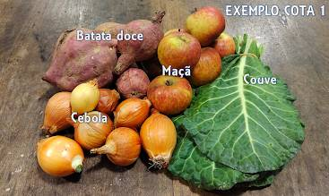
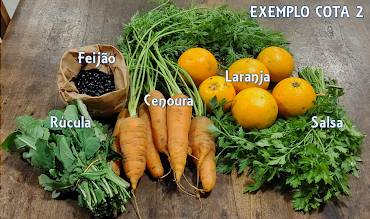

Comunidade que Sustenta a Agricultura - é um movimento mundial que tem por objetivo criar relações mais próximas entre consumidores e agricultores. É um conceito que preza por sustentabilidade, relações justas de comércio, respeito pelo alimento e pela natureza, dentre tantos outros benefícios que um modelo de agricultura familiar proporciona.
O casal de agricultores Vitor e Tânea são os responsáveis pelo Sítio Saraquá. Eles produzem alimentos orgânicos certificados, além de seguirem e promoverem os princípios da agroecologia. Vitor e Tânea fundaram a CSA Sítio Saraquá: a primeira CSA no estado de Santa Catarina e que atualmente conta com mais de 60 integrantes!
Cooperação, em contraponto à dinâmica de competição do mercado;
Confiança e transparência entre as partes envolvidas;
Respeito à sazonalidade da produção, favorecendo a nutrição e o meio ambiente;
Economia circular e associativa;
Abastecimento direto do sítio, reduzindo custos intermediários e evitando desperdícios;
Convívio fraterno.
Como funciona nossa CSA?
Ao se associar os integrantes adquirem o privilégio de participar diretamente das atividades do sítio, seja através de visitas programadas, seja pelo recebimento dos alimentos orgânicos ali produzidos.
Os alimentos são distribuídos todas as terças-feiras pela manhã, nos pontos de partilha do Centro, Itacorubi e Campeche. Escolha o mais próximo de você!
Você opta por quais e quantas cotas de alimentos produzidos deseja receber:
Cota de vegetais – Cada cota inclui 4 a 5 variedades semanais (R$ 100 mensal – variável de acordo com o número de integrantes)
Cotas de ovos – cada cota inclui meia dúzia de ovos por semana (R$ 39 mensal).
Cotas de pães – cada cota inclui 1 pão de aprox. 420g por semana (R$ 59 mensal).
Produtos de mercearia – cereais, farinhas , geléias, mel, conservas, sucos, congelados, temperos e muitos outros (essa tabela de valores é divulgada semanalmente aos integrantes)
Adicionalmente incluem-se, por associado, as taxas de R$ 25 do transporte e R$ 10 do fundo de reserva.
Trabalhamos apenas com alimentos orgânicos e temos certificação dos nossos produtos.
Fale conosco para fazer parte da comunidade ou tirar dúvidas: (48) 998675149 .
Fale com o Sítio Saraquá: (48) 996606112 .
Os integrantes decidem de forma democrática o que será plantado no sítio sempre antes de agosto de cada ano, que é quando se dá o início do ano agrícola. Também opinam sobre os rumos da comunidade, quais investimentos podem ser realizados no sítio e participam ativamente da promoção do grupo para atrair novos integrantes. Além disso, são responsáveis por pequenas tarefas para uma boa manutenção do grupo: tesouraria, coordenação, contato com interessados, partilheiros… Os voluntários para estas tarefas são bonificados com alimentos do sítio, custeados por toda a comunidade.
O sítio possui um custo mensal para manutenção da produção e assim como os produtos, este custo é rateado entre todos os integrantes. Portanto, a mensalidade pode sofrer pequenas variações de acordo com adesões e saídas da comunidade.
Você não precisa se preocupar com isso, pois a cota é selecionada pelo sítio e vem de acordo com a sazonalidade do que foi produzido, garantindo uma dieta mais diversa, nutritiva e conectada com as ofertas da natureza.
Cada cota de alimentos é composta por pelo menos 4 variedades de orgânicos que costumam seguir este padrão: 1 fruta, 1 folhosa, 1 legumes e 1 raiz ou tempero.
Esta configuração pode mudar de acordo com a época do ano, pois a comunidade respeita a sazonalidade e ciclos de cada alimento.
O que não muda: tem sempre ao menos uma porção de frutas e tem sempre no mínimo 4 variedades de alimentos por cota. Mas é bastante comum virem mais do que 4 variedades de itens por cota - em algumas épocas, uma cota chega a ter até 7 variedades!
Os integrantes escolhem quantas cotas de alimentos desejam receber semanalmente. Os que optam por uma cota, recebem ao menos 4 itens diferentes. Quem escolhe receber duas cotas, tem ao menos 8 variedades de itens semanais. Para opções de três ou mais cotas não se amplia mais a variedade de itens, somente a quantidade.


Fale conosco para fazer parte da comunidade ou tirar dúvidas: (48) 998675149 .
Fale com o Sítio Saraquá: (48) 996606112 .